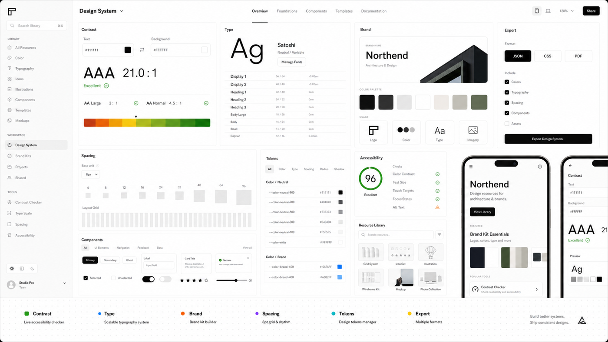

Decision hub
Compare
Compare common design system workflows before running the tool.

Featured Compare
Token Board vs Type Scale
Compare token board and type scale inside the Color Contrast Checker workflow.
Design System comparisonContrast Checker vs Brand Brief
Compare contrast checker and brand brief inside the Color Contrast Checker workflow.
Design System comparisonType Scale vs Component Preview
Compare type scale and component preview inside the Color Contrast Checker workflow.
Design System comparisonBrand Brief vs Export Panel
Compare brand brief and export panel inside the Color Contrast Checker workflow.
Design System comparisonComponent Preview vs Token Board
Compare component preview and token board inside the Color Contrast Checker workflow.
Design System comparisonExport Panel vs Contrast Checker
Compare export panel and contrast checker inside the Color Contrast Checker workflow.
Design System comparisonToken Board vs Type Scale
Compare token board and type scale inside the Color Contrast Checker workflow.
Design System comparisonContrast Checker vs Brand Brief
Compare contrast checker and brand brief inside the Color Contrast Checker workflow.
Design System comparisonType Scale vs Component Preview
Compare type scale and component preview inside the Color Contrast Checker workflow.
Design System comparisonBrand Brief vs Export Panel
Compare brand brief and export panel inside the Color Contrast Checker workflow.
Design System comparisonComponent Preview vs Token Board
Compare component preview and token board inside the Color Contrast Checker workflow.
Design System comparisonExport Panel vs Contrast Checker
Compare export panel and contrast checker inside the Color Contrast Checker workflow.